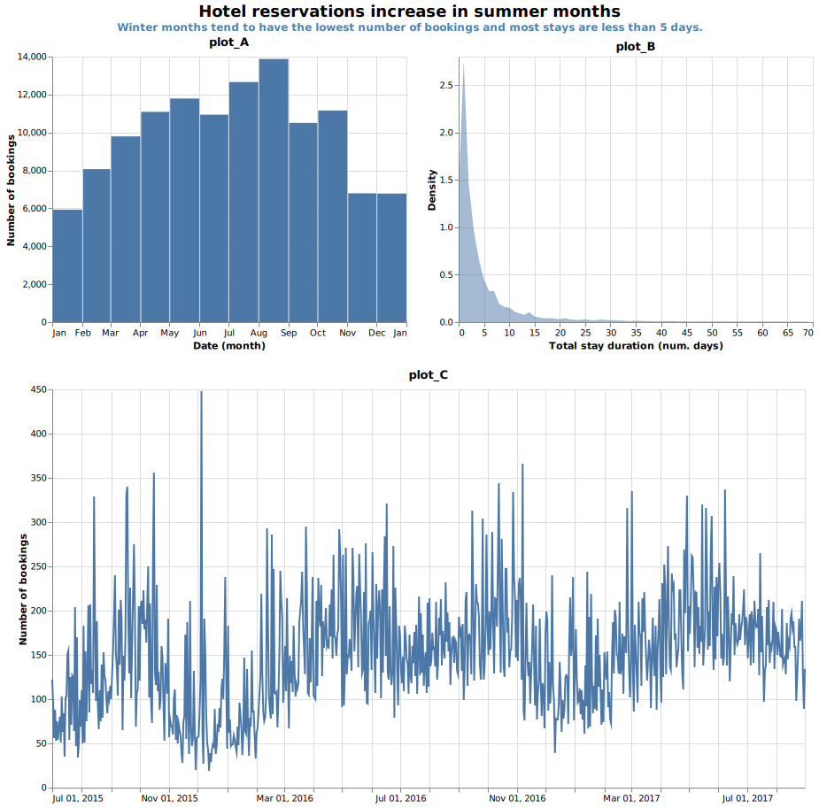
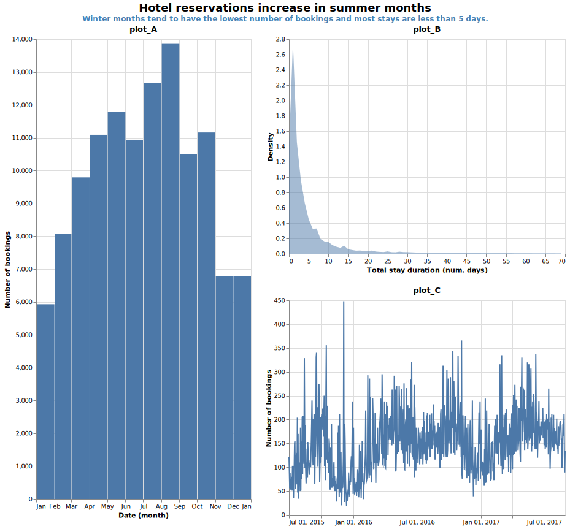
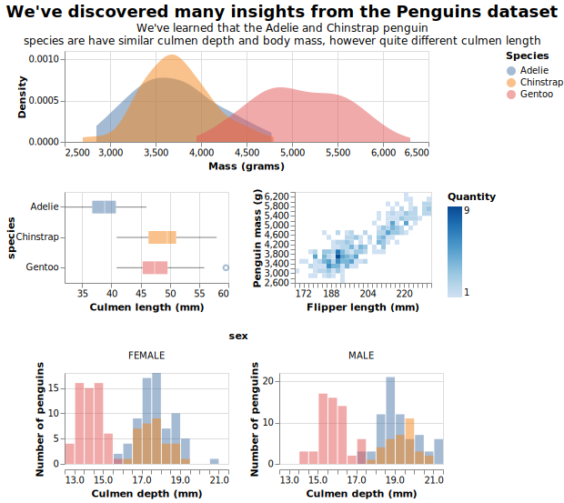

3.1. Exercises
True or False: Concatenating Plots
Lay it All Out!
Bringing back the hotel data that we saw from exercise 4, We’ve made a couple of different layouts with 3 visualizations.
(Attribution: These plots were created using a Kaggle dataset where the data was originally obtained from the article Hotel Booking Demand Datasets, written by Nuno Antonio, Ana Almeida, and Luis Nunes for Data in Brief, Volume 22, February 2019.)


Placing Penguins Properly
Instructions:
Be patient when running a coding exercise for the first time, it can take a few minutes.
When you see ____ in a coding exercise, replace it with what you assume to be the correct code. Run the code to see if you obtain the desired output and submit it to validate if you were correct.
We’ve worked with the penguin dataset quite a lot in this course and it only makes sense now to combine some of the plots we’ve made already into one combined presentation.
Here we have 4 plots that we have made in the previous modules (or similar to these) that we want to combine together so that the first plots lies at the top of the presentation followed by a second row that contains 2 plots side by side and end with a bottom row with the last plot. It should appear something like this:

Tasks:
Fill in the blanks in the code below so that the following gets accomplished:
- From the given plots
mass_density_plot,masss_boxplot,penguin_heatmapandculmen_facet_plot, arrange them so they look like the image above.